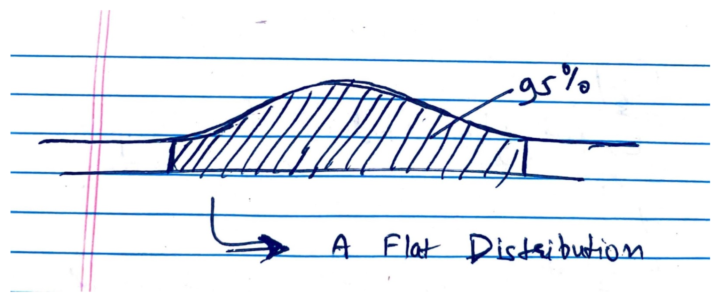
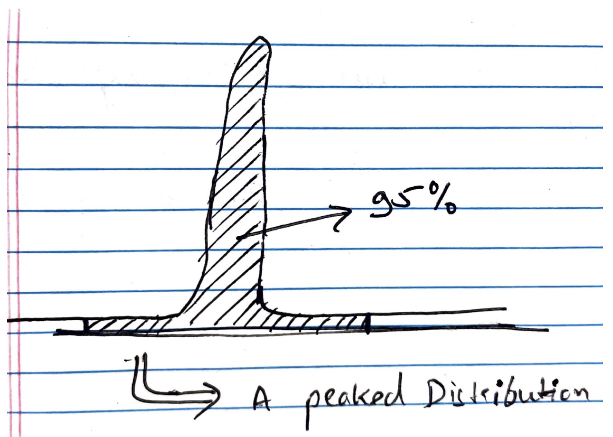
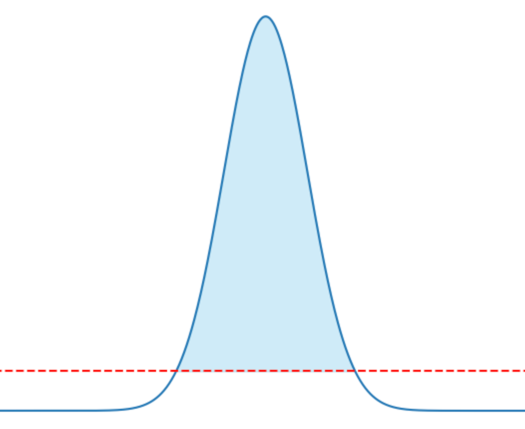
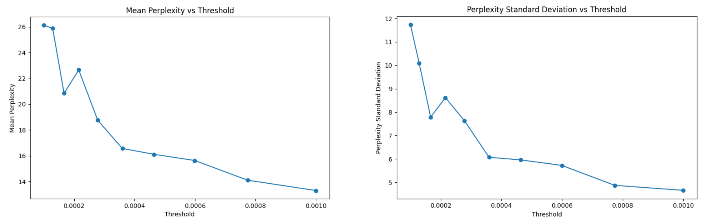
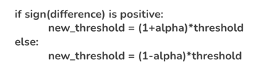

Project Members: Gaurav Sharma, Milind Kesar Thummala, Shikher Srivastava
Contact Email: gauravsharma2024@u.northwestern.edu, milindthummala2023@u.northwestern.edu, shikhersrivastava2023@u.northwestern.edu
Course: COMP_SCI_496-0 Special Topics in Computer Science: Generative Deep Models, Northwestern University, Professor Bryan Pardo
This project investigates the decoding strategies of Language Model (LLM) with a particular focus on Nucleus Sampling, and analyzes potential shortcomings, proposing a new sampling strategy to overcome these issues. The dynamic thresholding strategy based on perplexity is the crux of this project.
Nucleus Sampling, along with other methods like Top-K Sampling, has been instrumental in shaping the success of LLMs. However, it is far from perfect. This project scrutinizes the text generated by Nucleus Sampling to identify its shortcomings. We uncover that the method can potentially miss words with significant probability, thereby impacting the model's creativity.
 The visualization of how Nucleus Sampling can miss words with significant probability.
We present a novel decoding strategy, namely Threshold-based sampling. The key idea is to apply a threshold on the probability values of the tokens and to sample only from tokens that have probabilities higher than this threshold. This approach successfully addresses the issues we found in Nucleus Sampling and Top-K Sampling.
A demonstration of the Threshold-based sampling strategy, displaying its robustness to skewed distributions.
Choosing an appropriate value for the threshold is crucial. Below shows graph for static thresholding approach with standard deviation and mean of perplexity versus the threshold. This approach allows us to select a static threshold that enhances our model's performance.
Graphs showing the relationship between average perplexity, variance, and a range of threshold values.
In addition to static thresholding, we also explore dynamically adjusting the threshold based on the perplexity scores of previously generated words. We found that this method can help keep the perplexity close to the target perplexity, thereby enhancing the coherence and creativity of the generated text.
The difference in average perplexity and the target can help update the current threshold.
Through extensive experimentation, we found that our threshold-based sampling yields more coherent text with less repetition than the previous methods. Dynamic thresholding shows potential in controlling the perplexity of the generated text but requires further refinement. Overall, our results point to Threshold-based sampling as a promising alternative to current decoding strategies in LLMs.